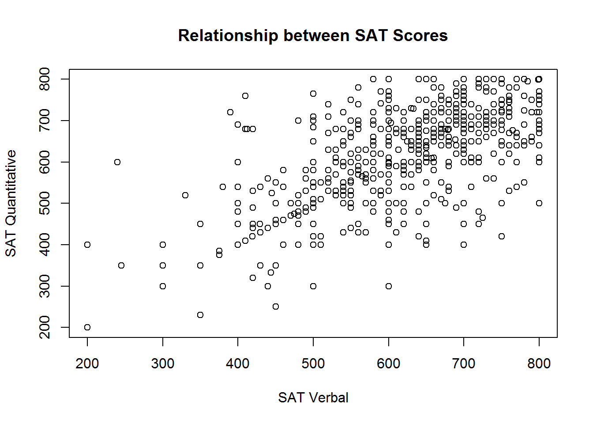
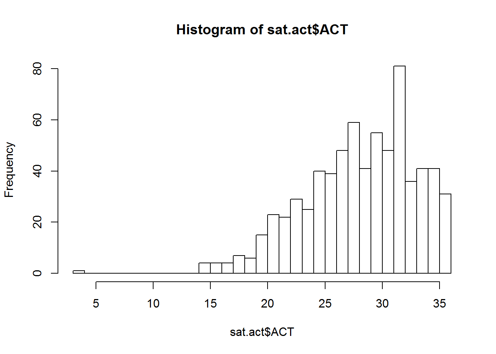
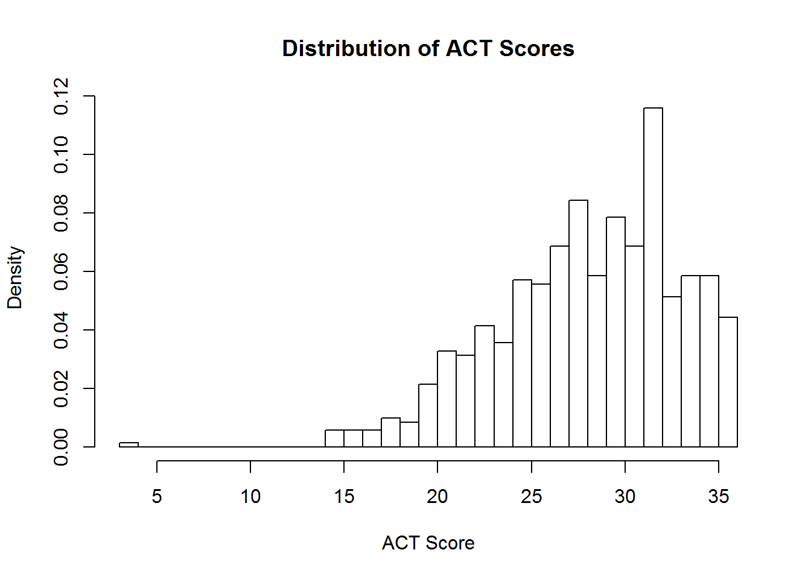

Chapter 3 Statistics
3.1 The Data
We rely on the sat.act data set from the psych package for all demonstrations in this chapter.
To make the data set available on your own computer, run the following code:
install.packages('psych')
library(psych)You should now be able to access the sat.act data set:
summary(sat.act)## gender education age ACT
## Min. :1.000 Min. :0.000 Min. :13.00 Min. : 3.00
## 1st Qu.:1.000 1st Qu.:3.000 1st Qu.:19.00 1st Qu.:25.00
## Median :2.000 Median :3.000 Median :22.00 Median :29.00
## Mean :1.647 Mean :3.164 Mean :25.59 Mean :28.55
## 3rd Qu.:2.000 3rd Qu.:4.000 3rd Qu.:29.00 3rd Qu.:32.00
## Max. :2.000 Max. :5.000 Max. :65.00 Max. :36.00
##
## SATV SATQ
## Min. :200.0 Min. :200.0
## 1st Qu.:550.0 1st Qu.:530.0
## Median :620.0 Median :620.0
## Mean :612.2 Mean :610.2
## 3rd Qu.:700.0 3rd Qu.:700.0
## Max. :800.0 Max. :800.0
## NA's :13As you can see, this data set includes self-reported SAT and ACT scores along with demographic information from 700 respondents. It therefore contains both categorical and continuous variables that are appropriate for both within- and between-subjects analyses. For more information, refer to the help documentation by running the command ?sat.act.
3.2 Formula Objects
Formulas are special objects in R that are used in a range of functions discussed in this chapter, notably plot(), aov(), and lm(). The use of formulas in these specific functions will be discussed in more detail below, but we first introduce their general properties here.
The basic structure is as follows:
y ~ x
The y variable is the dependent variable, the x variable is the independent variable, and the ~ operator can be taken to mean “as a function of”. Thus, the above example is a formula for “y as a function of x”.
For a more concrete example, consider the effect of the independent variable age on the dependent variable ACT scores:
sat.act$ACT ~ sat.act$age
We can have multiple independent variables in the formula. For instance, if we wanted to define ACT scores as a function of age and education, we would do so as follows:
sat.act$ACT ~ sat.act$age + sat.act$education
The above formula is an example of an “additive” model, in which ACT scores are a function of the additive effects of age and education. To define the interactive model, we would separate age and education by an asterisk instead of a plus sign:
sat.act$ACT ~ sat.act$age*sat.act$education
Note that the above formula defines the full interactive model, so ACT scores are defined as a function of (1) the main effect of age, (2) the main effect of education, and (3) the interaction of age and education. This same model can be implemented by defining each components separately in the formula object, like this:
sat.act$ACT ~ sat.act$age + sat.act$education + sat.act$age:sat.act$education
By defining the components separately, you can pick and choose which to keep. For instance, you could specify only the main effect of age and the interaction of age and education, as follows:
sat.act$ACT ~ sat.act$age + sat.act$age:sat.act$education
Formulas can get much more complex than the examples here, which only extend as far necessary for the functions and tests that you are likely to use as an instructor in undergraduate psychology program. A comprehensive tutorial can be found here.
3.3 Descriptive Statistics
3.3.1 Mean
3.3.2 Median
3.3.3 Variance
3.3.4 Standard Deviation
3.3.5 Standard Error
3.3.6 Correlation
3.3.7 Summary Functions
3.4 Plotting
One of the most compelling reason to learn and use is because it includes highly flexible and powerful tools for visualizing many kinds of data. After all, if a single tool can perform your analyses and create your figures, why not use the “one ring to rule them all”?
Many visualizations can be created using the plot() function, so we’ll begin our introduction using that function. As you’ll soon see, the plot() function accepts many arguments, as there are many ways to customize a plot. Many of the other visualization tools in R accept similar arguments. So, if plot() accepts an argument, there is a fair chance another function will accept it as well.
3.4.1 Scatter & Line Plots
If you have two vectors representing pairs of observations, you can plot them against one another in a scatter plot using the plot() function. Let’s demonstrate this by plotting the SAT Verbal and SAT Quantitative scores from the sat.act dataset against one another.
plot(sat.act$SATV, sat.act$SATQ) # Access the columns as vectors using $ syntax
The points in the plot above represent pairs SAT Verbal and SAT Quantitative scores. The scores in each vector are paired up by position within each vector - the first value in SATV is paired with the first value in SATQ, the second value in SATV is paired with the second value in SATQ, etc. The vector given as the first argument determines the X axis position, and the vector given as the second argument determines the Y axis position.
The axis titles are determined by the variable names of the vectors supplied to the plot function. However, variable names aren’t always the most informative names for other humans to read. We can customize the axes and plot with informative titles using the xlab, ylab and main arguments for the plot function:
plot(sat.act$SATV, sat.act$SATQ,
xlab = "SAT Verbal", ylab = "SAT Quantitative",
main = "Relationship between SAT Scores")
3.4.1.1 Linetypes, Symbols, and Colors
You can customize the scatterplot to draw lines between the points, or just draw lines without the point symbols with the type argument. This is not a sensible thing to do for these data, but we demonstrate it anyway for completeness.
# Lines and points
plot(sat.act$SATV, sat.act$SATQ,
xlab = "SAT Verbal", ylab = "SAT Quantitative",
main = "Relationship between SAT Scores",
type = "o")
Figure 3.1: Points and lines with type=‘o’
# Just lines
plot(sat.act$SATV, sat.act$SATQ,
xlab = "SAT Verbal", ylab = "SAT Quantitative",
main = "Relationship between SAT Scores",
type = "l")
Figure 3.2: Just using lines with type=‘l’
You can also customize the types of symbols that are used for each point using the pch, the style of lines connecting these points using the lty argument, and the col argument to adjust the color of lines and symbol borders
With the pch argument, you specify the symbol used for each point using a numeric code. For example, the value 0 is the code for an unfilled square, while the value 15 is the value for a filled square with no border. Unfortunately, it has been scientifically proven that remembering the code for all the possible symbols is impossible. Luckily, a helpful mnemonic device called a “chart” has been invented to help R programmers customize their plots. This chart is shown below:
Note that if you supply a character instead of a numeric values between 0 and 25, R will use that character as the plotting symbol. So, you could make a plot full of pound signs if you are so inclined!
The lty argument has a bit more flexibility. Line types can either be specified as an integer (0=blank, 1=solid (default), 2=dashed, 3=dotted, 4=dotdash, 5=longdash, 6=twodash) or as one of the character strings “blank”, “solid”, “dashed”, “dotted”, “dotdash”, “longdash”, or “twodash”.
The col argument accepts character string describing either a “built in” color name (see ?colors for a list) or an RGB triplet encoded in hexadecimal notation. Unless you are intimately familiar with RGB color space, it’s a good idea to use a tool like the W3 Organizations Online Color Picker to help you figure out the RGB hex code for the color you want.
To demonstrate, lets take our original plot (with no lines) and customize it to use unfilled, magenta triangles:
# Lines and points
plot(sat.act$SATV, sat.act$SATQ,
xlab = "SAT Verbal", ylab = "SAT Quantitative",
main = "Relationship between SAT Scores",
col="magenta", pch=2)3.4.1.2 Axis limits
R usually does a good job of determining good values for the range of each axis, but if you wish to override the defaults, you can do do using the xlim and ylim arguments. These arguments accepts 2-element numeric vectors specifying the minimum and maximum values along each axis (in that order). For example, if we wanted to include 0 in the range of SAT scores shown on the plot, we could use c(0, 800) for both our axis limits:
# Lines and points
plot(sat.act$SATV, sat.act$SATQ,
xlab = "SAT Verbal", ylab = "SAT Quantitative",
main = "Relationship between SAT Scores",
xlim = c(0, 800),
ylim=c(0, 800))
This isn’t particularly sensible, because 0 is not a possible score on the SAT, so consider this just a demonstration of R’s capabilities.
3.4.1.3 Adding to an existing plot
In many cases, it is useful to have different symbols, colors, and linetypes on the same plot - for example, to denote observations from different groups. There is more than one way to achieve this effect, but when you want different symbols, colors, and linetypes on the same plot, often the easiest way to do it is plot each group one at a time.
To do this, you begin with the familiar plot command, but use it to plot only a subset of the data. Then, you can use the points or lines function to add additional points (or lines) to the plot. We’ll demonstrate how you can plot the SAT scores for males and females in different colors by subsetting the dataset, and then using the plot and points functions:
males <- sat.act[sat.act$gender == 1, ]
females <- sat.act[sat.act$gender == 2, ]
plot(males$SATV, males$SATQ,
xlab = "SAT Verbal", ylab = "SAT Quantitative",
main = "Relationship between SAT Scores",
col="red")
points(females$SATV, females$SATQ, col="blue")3.4.1.4 Adding a legend
If you use multiple symbols, colors, and linetypes on the same plot, you’ll also need a legend telling the viewer how to interpret the different symbols, colors, and linetypes. You can add legends to an existing plot using the legend function. Unfortunately, the legend function doesn’t know what symbols, colors, and linetypes you’ve used, or what the different groups in your data are. So, you’ll have to re-capitulate this information to the legend function. Make absolutely sure that you specify the labels, colors, symbol codes, and linetypes in the exact same order you added them to the plot! You also must specify a pch or linetype value, even if you used the default value in your plot!
Perhaps the trickiest part about using the legend function is figuring out where to place the legend. The location may also be specified by setting the first argument to the legend function to a single keyword from the set “bottomright”, “bottom”, “bottomleft”, “left”, “topleft”, “top”, “topright”, “right” or “center”. Alternatively, you can get fine-grained control over the placement by providing two values that represent an x,y coordinate for the top-right corner of the legend:
plot(males$SATV, males$SATQ,
xlab = "SAT Verbal", ylab = "SAT Quantitative",
main = "Relationship between SAT Scores",
col="red")
points(females$SATV, females$SATQ, col="blue")
legend(x=200, y=800,
legend = c("Males", "Females"),
col = c("red", "blue"),
pch=1)3.4.1.5 Adding a regression line
It is often useful to summarize the linear relationship between variables shown in a scatterplot. It is easy to add the “line of best fit” from a linear regression to your scatter plot using the lm function (short for “linear model) and the abline function (used for drawing straight lines).
The lm function performs regression analysis based on the formula you specify. If you intended on adding the regression line to your scatterplot, we recommend you use the same formula to specify your plot, which the plot function is more than capable of understanding. The basic steps are:
- Perform your linear regression with
lm, and save the output to a variable - Create your scatterplot using the same formula specification
- Prove the
lmobject you saved in Step #1 to theablinefunction. - Marvel at your wonderful new plot
regression_results <- lm(SATQ ~ SATV, data=sat.act)
plot(SATQ ~ SATV, data=sat.act,
xlab = "SAT Verbal", ylab = "SAT Quantitative",
main = "Relationship between SAT Scores")
abline(regression_results, lwd=2) # lwd = "line width",
In the call to abline above, we have specified the lwd argument, short for “line width”, a.k.a. thickness. The default value is 1, and we have double the thickness here so the regression line stands out from the points more.
3.4.2 Histograms
You can create a histogram showing the counts or proportion of values from a single variable using the hist function.
The hist function works with a vector of numeric values, and breaks this vector up into a number of discrete bins. By default, the hist function decides what the boundary values of the bins should be, and how many bins should be used, by applying the Sturges algorithm. However, you can manually control where the boundaries are placed by providing a vector of boundary values, or by providing a single value specifying the number of bins that should be used. We demonstrate both techniques below in plotting a histogram of ACT scores:
hist(sat.act$ACT, breaks = 30)
hist(sat.act$ACT, breaks = seq(0, max(sat.act$ACT), by=2))
If you want proportions instead of counts, set the freq argument to false. You can also use the same xlab, ylab, and main arguments we used with plot to get more informative titles/
hist(sat.act$ACT, breaks = 30, freq=FALSE,
main = "Distribution of ACT Scores",
xlab = "ACT Score")
3.4.3 Boxplots
Box plots are a good way to present the shape of distribution of samples from several groups, along with some summary statistics of each group. We can create these plots in R using the boxplot function.
If your to-be-plotted data is in a data frame, the best way to instruct the boxplot function what variables should be plotted is using a formula. If they are not in a data frame, you can provide each to-be-plotted variable as a separate vector. Here, we’ll demonstrate the formula interface by plotting the SAT Verbal scores for respondents with education levels. Remember, when using the formula interface, you also have to tell the boxplot function what data frame to look for the variables in!
boxplot(SATV ~ education, data=sat.act,
names=c("< High School", "High School", "Some College",
"2 Yr. College", "4 Yr. College", "Grad. Work"),
ylab="SAT Verbal Score", xlab="Education")
Note the use of the names argument to override the labels on each X axis point.
3.4.4 Bar plots
Bar plots are used to visualize single summary statistics, like the mean or median across groups. We can create a bar plot in R using the barplot function. We’ll demonstrate this by plotting the mean SAT Verbal score for males and females. The to-be-plotted value should be specified in a vector or matrix, with one element for each bar you want plotted
SATV_means <- c(mean(sat.act$SATV[sat.act$gender==1]),
mean(sat.act$SATV[sat.act$gender==2])
)
names(SATV_means) <- c("Males","Females")
barplot(SATV_means,
ylim=c(0,800), ylab="Average SAT Verbal Score",
main="SAT Verbal Scores for Males & Females"
)
3.4.5 Multiple plots in single figure
In many situations, it is useful to have several different plots in a single figure to facilitate comparison. But in the examples we have encountered so far, each time we create a new plot, it has removed the existing one from out figure window. We can change this behavior to allow multiple figures within the same window by using the par function, which changes R’s global graphics parameters.
We can set the number of plots that go into a figure window much in the same way we set the dimensions of a matrix - by specifying how many rows of plots there can be, and how many columns of plots there can be. The product of these two values determines the number of plots that are put on a single figure window.
There are two global graphics parameters that allow us to set these dimensions - the mfrow parameter, and the mfcol parameter. The mf stands for “multiple figures”, and the row or col part means the figures are filled in by rows, or by columns. Here, we demonstrate how to use the mfrow option to create a 2 by 2 grid of plots, which will allow us to compare the distribution of ACT scores in histograms with different numbers of breaks:
par(mfrow = c(2,2))
hist(sat.act$ACT, breaks = 10, main = "10 breaks")
hist(sat.act$ACT, breaks = 30, main = "30 breaks")
hist(sat.act$ACT, breaks = 50, main = "50 breaks")
hist(sat.act$ACT, breaks = 100, main = "100 breaks")par(mfrow = c(1,1)) # Reset back to defaultAlways make sure to set your mfrow or mfcol values back to c(1,1) afterwards, or all subsequent plots will use the same layout!
3.4.6 Saving Plots
Usually the purpose of creating a visualization in R is to include it in some kind of homework, report, or paper. It is easy to save a plot made in R to an image file on your hard drive using the “Export” option in the R Studio plot pane. Simply click the “Export” drop down menu, and select either the “Save to Image”, “Save to PDF” or “Copy to Clipboard” options.
If you choose the “Save as Image” option, you’ll get to choose which image format you want to save it as, and what the width and height (in pixels) the image should be saved as.
3.4.7 What about ggplot?
The ggplot2 package is an extremely popular visualization tool, which provides an alternative to the so-called “base graphics” functions described here. The popularity ggplot has achieved is well deserved - it’s visualizations are attractive, and it’s data-driven, modular coding style is very powerful. The programming style of ggplot is very different from the base graphics style. Perhaps the best way to summarize the ggplot approach is that it is builds on top of the organization of the observations inside a data frame and allows you to “map” the variables in your data frame to the “aesthetics” in a plot (shape, position, color, size, etc.).
We will not cover ggplot here, because it is not a necessity for 240 and 241 (though, in our opinion, a proficient R programmer should know how both ggplot and base graphics). However, we will re-iterate the advice the ggplot package authors give for those wishing to learn how to use ggplot:
If you are new to ggplot2 you are better off starting with a systematic introduction, rather than trying to learn from reading individual documentation pages. Currently, there are three good places to start:
The data visualisation and graphics for communication chapters in R for data science.
If you’d like to take an interactive online course, try Data visualisation with ggplot2 by Rick Scavetta on DataCamp.
If you want to dive into making common graphics as quickly as possible, I recommend The R Graphics Cookbook by Winston Chang.
3.5 Inferential Statistics
3.5.1 Distribution Functions
The sections below introduce functions for executing common statistical tests. However, R’s family of distribution functions also make it possible to explore the underlying probability distributions for each test, and to carry out each test by hand. We therefore begin our demonstration of inferential statistics by giving an overview of these powerful instructional tools.
The full list of available distributions can be found here. The following table provides an overview the distributions that are likely to be relevant to you as an instructor, including the suffix that each distribution is identified by in the functions below:
| Distribution | Suffix | Parameters |
|---|---|---|
| Normal | norm |
mean, SD |
| Student’s T | t |
df, non-centrality |
| Chi-Square | chisq |
df, non-centrality (non-negative) |
| F | f |
df1, df2, non-centrality |
| Binomial | binom |
size (number of observations), probability |
| Uniform | unif |
minimum, maximum |
View the help documentation for default parameter values and additional details.
Each distribution can be accessed by a set of four functions, each labelled with the distribution’s suffix and a task-specific prefix:
| Prefix | Task | Example |
|---|---|---|
| d | Get the probability density associated with a point on the x-axis. | dnorm() |
| p | Get the probability of a value above or below a point on the x-axis. | pnorm() |
| q | Get the x-axis value marking a cumulative probability. | qnorm() |
| r | Get a random sample from the distribution. | rnorm() |
These functions are each demonstrated in the following sub-sections using the normal distribution. In these examples, consider that IQ scores are meant to be normally distributed with a mean of 100 and a standard deviation of 15:

3.5.1.1 Getting Densities
The functions for getting the probability density associated with a point on the x-axis, such as dnorm() in the case of the normal distribution, are unlikely to come up in class. However, they may be useful for generating figures such as the one above, which was created with the following code:
hist(rnorm(10000, mean=100, sd=15), freq=FALSE, ylim=c(0, .03), xlab='', main='IQ Scores')
points(x=seq(40, 160, .001), y=dnorm(seq(40, 160, .001), mean=100, sd=15), type='l', col='red')Note that the input to dnorm() was a sequence of values from 40 to 160, by steps of .001. The output was the probability density for each value in the sequence. These values were then used to create a continuous curve that was added to the histogram of the data, in which the argument freq=FALSE ensured that the y-axis denoted probability densities instead of counts. A more detailed tutorial is provided here.
3.5.1.2 Getting Probabilities
You can use pnorm() to demonstrate that there is a 9.12% chance of getting an IQ score that is less than or equal to 80:
pnorm(80, mean=100, sd=15)## [1] 0.09121122To find the probability of getting a value greater than or equal to a cutoff, such as 80, you can either add the argument lower.tail=FALSE:
pnorm(80, mean=100, sd=15, lower.tail=FALSE)## [1] 0.9087888…or, since the area under the curve sums to 1, you can subtract the output of the previous command from 1:
1-pnorm(80, mean=100, sd=15)## [1] 0.9087888The latter method may be better for instructional purposes.
3.5.1.3 Getting Quantiles
You can use qnorm() to demonstrate that an IQ score of 124.67 marks the 95th percentile of scores:
qnorm(.95, mean=100, sd=15)## [1] 124.6728Similarly, you can add the argument lower.tail=FALSE to see the point on the x-axis that marks the top 95% of scores:
qnorm(.95, mean=100, sd=15, lower.tail=FALSE)## [1] 75.3272Note that subtracting from 1 does not work here as it did with pnorm() because the output of qnorm() is a quantile, which does not need to sum to 1 as probabilities do.
3.5.1.4 Getting Random Samples
You can use rnorm() to randomly sample a class of 50 students from the population of IQ scores:
rnorm(50, mean=100, sd=15)## [1] 95.52499 84.71431 96.53615 102.05179 109.28385 67.74275 114.05660
## [8] 80.58246 79.40886 104.06581 129.37865 112.20758 133.38059 106.66902
## [15] 108.40870 102.73311 91.74186 104.89217 91.58004 83.28713 111.90655
## [22] 90.75864 116.70297 91.91457 101.47112 108.31598 122.94094 118.10001
## [29] 84.75393 91.36934 104.08181 98.64841 101.50947 92.29170 94.20761
## [36] 98.92433 77.65632 91.75974 113.16244 75.16021 71.64527 55.06673
## [43] 99.46052 94.73331 108.84918 90.01942 71.51943 77.66735 77.35102
## [50] 97.956553.5.1.5 Running Statistical Tests by Hand
These functions can be used to conduct statistical analyses by hand. Consider a demonstration of a z-test using the functions for the normal distribution. To test whether an IQ score of 135 is significantly different from the mean IQ score, first find the z-score:
IQ135_z <- (135-100)/15
IQ135_z## [1] 2.333333You could then compare that z-score to the critical z-scores associated with an alpha of .05, here assuming a two-tailed hypothesis:
qnorm(.025)## [1] -1.959964qnorm(.975)## [1] 1.959964The z-score of an IQ of 135 is greater than the critical z-score for the upper tail, so we can reject the null hypothesis. Note that for a one-tailed hypothesis, simply use one call to qnorm() with .05 or .95 for the lower or upper tail, respectively.
Alternatively, you could find the probability of getting a z-score that if equal to the test score or more extreme (in this case, more positive), and compare that to the alpha value instead of the critical z-score:
IQ135_z_prob <- 1-pnorm(IQ135_z)The probability of getting an IQ of 135 is less than alpha (either .025 for a two-tailed hypothesis or .05 for a one-tailed hypothesis), so we reject the null hypothesis.
Note that you could also apply this method by finding the probability of an IQ of 135 given a mean of 100 and standard deviation of 15, and compare that to the alpha value instead:
IQ135_prob <- 1-pnorm(135, mean=100, sd=15)This provides the same probability as for the z-score, so we make the same conclusion. However, though it uses one line of code instead of two, you may find that this method is more confusing for some students, particularly if they are used to seeing distributions centered on 0 elsewhere in the course.
This same process can be extended to a range of statistical tests, including t tests, F tests, Chi-Square tests, and binomial tests.
3.5.2 Confidence Intervals
Confidence intervals can be calculated by hand in R using the distribution functions. Recall that the formula for a confidence interval is:
\[CI=\bar{x} \pm (critical \: statistic) \frac{s}{\sqrt{n}}\]
The following demonstration will be conducted using the normal distribution, but the same process can be generalized to other statistics. We will continue with the theoretical distribution of IQ scores used above in which the mean is 100 and the standard deviation is 15.
Imagine that we tested the IQ of 100 students, simulated here with a call to rnorm():
We know that the sample size, n, is 100. To find the 95% confidence interval, we would need to also find the sample mean, the sample standard deviation, and the critical z score that marks the .975 percentile:
# Find the mean
mean_IQ <- mean(sample_IQ)
# Find the standard deviation
sd_IQ <- sd(sample_IQ)
# Find the critical z-score (upper tail)
z_crit <- qnorm(.975)Note that we only need to find the z-score that marks the .975 percentile because the normal distribution is symmetric, so the critical z-score for the .025 percentile is simply the negative of this value. You can, however, choose to ask your students to find both separately if you think it would help from an instructional standpoint.
Then, we combine all of these ingredients to find the upper and lower limits of the confidence interval:
# Find the lower limit
CI_lower <- mean_IQ - z_crit*(sd_IQ/sqrt(100))
CI_lower## [1] 95.30461# Find the upper limit
CI_upper <- mean_IQ + z_crit*(sd_IQ/sqrt(100))
CI_upper## [1] 101.1315The confidence interval ranges from 98.41 to 104.88, suggesting that if this experiment had been repeated over and over an infinite number of times, the true population mean would be within that range 95% of the time.
Note that while calculating confidence intervals by hand is a useful instructional tool, some functions for statistical tests do give the confidence interval “for free”, such as t.test() and binom.test(). Make sure to be clear with students when it is acceptable to get confidence intervals from these functions to complete assignments.
3.5.3 t.test()
The t.test() function can be used to execute one-sample, paired, or two-sample t-tests. Each case is demonstrated below, but first note three general arguments that can be used to augment the test:
| Argument | Values |
|---|---|
alternative |
Set to two.sided for a two-sided test, less for the lower tail, and greater for the upper tail; the default is two.sided. |
var.equal |
Set to TRUE to assume equal variance and FALSE otherwise; the default is FALSE. |
conf.level |
Provide a number between 0 and 1 to specify the range for the confidence interval; the default is .95. |
3.5.3.1 One-sample t-tests
To demonstrate a one-sample t-test, imagine that we are curious whether the average verbal SAT score in the sat.act data set is different from 0. We could test that question with the following call:
t.test(sat.act$SATV)##
## One Sample t-test
##
## data: sat.act$SATV
## t = 143.47, df = 699, p-value < 2.2e-16
## alternative hypothesis: true mean is not equal to 0
## 95 percent confidence interval:
## 603.8560 620.6126
## sample estimates:
## mean of x
## 612.2343The output of t.test() gives us a nice summary of the results, including the t-statistic, degrees of freedom, p-value, and 95% confidence interval. The p-value is essentially 0, so we can reject the null hypothesis that the average verbal SAT score is 0.
If we wanted to instead see if the average verbal SAT score was different from 650, we could change the null comparison value by setting the mu parameter:
t.test(sat.act$SATV, mu=600)##
## One Sample t-test
##
## data: sat.act$SATV
## t = 2.867, df = 699, p-value = 0.004269
## alternative hypothesis: true mean is not equal to 600
## 95 percent confidence interval:
## 603.8560 620.6126
## sample estimates:
## mean of x
## 612.2343The p-value is 0.004, so we can reject the null hypothesis that the average verbal SAT score is 600. Instead, it appears to be significantly higher.
3.5.3.2 Paired t-tests
To demonstrate a paired t-test, imagine that we are curious as to whether verbal SAT scores are different from quantitative SAT scores. We can conduct this in one of two ways.
First, we could calculate the difference score for each pair, then run a one-sample t-test comparing the average difference score to 0:
# Calculate difference scores
sat.act$SAT_diff <- sat.act$SATV-sat.act$SATQ
# Run a one-sample t-test
t.test(sat.act$SAT_diff)##
## One Sample t-test
##
## data: sat.act$SAT_diff
## t = 0.57483, df = 686, p-value = 0.5656
## alternative hypothesis: true mean is not equal to 0
## 95 percent confidence interval:
## -5.116109 9.351917
## sample estimates:
## mean of x
## 2.117904The p-value is .566, so we fail to reject the null hypothesis that the difference between verbal and quantitative SAT scores are approximately zero.
In the second method, we could have t.test() compute the difference scores for us by specifying both samples and setting the paired argument to TRUE:
t.test(sat.act$SATV, sat.act$SATQ, paired=TRUE)##
## Paired t-test
##
## data: sat.act$SATV and sat.act$SATQ
## t = 0.57483, df = 686, p-value = 0.5656
## alternative hypothesis: true difference in means is not equal to 0
## 95 percent confidence interval:
## -5.116109 9.351917
## sample estimates:
## mean of the differences
## 2.117904We get exactly the same result. However, note that though this method uses fewer lines of code it risks obscuring the role of difference scores for the student.
3.5.3.3 Two-sample t-tests
To demonstrate a two-sample t-test, imagine that we are curious as to whether male and female students reported different quantitative SAT scores.
The function call is very similar to the second method for conducting a paired t-test, but we set the paired argument to FALSE instead:
t.test(sat.act$SATQ[sat.act$gender==1], sat.act$SATQ[sat.act$gender==2], paired=FALSE)##
## Welch Two Sample t-test
##
## data: sat.act$SATQ[sat.act$gender == 1] and sat.act$SATQ[sat.act$gender == 2]
## t = 4.3544, df = 492.94, p-value = 1.624e-05
## alternative hypothesis: true difference in means is not equal to 0
## 95 percent confidence interval:
## 21.88433 57.87165
## sample estimates:
## mean of x mean of y
## 635.8735 595.9955The p-value is approximately .00002, so we can reject the null hypothesis that male and female students report essentially the same quantitative SAT scores. Instead, the mean score for males appears to be significantly higher.
Note that the default value for the paired argument is FALSE, so running the above call with the paired argument omitted would produce the same result. However, you might want to encourage students to always specify the argument for a t-test with two samples so that they can be sure they are running the intended test.
Further, note that the above example indexes the male and female groups within the call to t.test(), but you could also ask students to do this separately beforehand:
# Subset the groups
male_SATQ <- sat.act$SATQ[sat.act$gender==1]
female_SATQ <- sat.act$SATQ[sat.act$gender==2]
# Run a two-sample t-test
t.test(male_SATQ, female_SATQ, paired=FALSE)##
## Welch Two Sample t-test
##
## data: male_SATQ and female_SATQ
## t = 4.3544, df = 492.94, p-value = 1.624e-05
## alternative hypothesis: true difference in means is not equal to 0
## 95 percent confidence interval:
## 21.88433 57.87165
## sample estimates:
## mean of x mean of y
## 635.8735 595.99553.5.4 aov()
The aov() function can be used to execute an ANOVA. The basic call includes one argument, which is a formula object. Whether aov() is used to run a one-way, two-way, or multi-way ANOVA, with or without interaction terms, is based entirely on the formula.
3.5.4.1 One-way ANOVA
To demonstrate a one-way ANOVA, imagine that we are curious as to whether verbal SAT scores vary across education level:
aov(sat.act$SATV ~ sat.act$education)## Call:
## aov(formula = sat.act$SATV ~ sat.act$education)
##
## Terms:
## sat.act$education Residuals
## Sum of Squares 19247 8890899
## Deg. of Freedom 1 698
##
## Residual standard error: 112.8613
## Estimated effects may be unbalancedThe standard output of aov does not contain readily interpretable results. To get the ANOVA table, it is better to save the output of aov(), then call summary() on that saved object:
educ_aov <- aov(sat.act$SATV ~ sat.act$education)
summary(educ_aov)## Df Sum Sq Mean Sq F value Pr(>F)
## sat.act$education 1 19247 19247 1.511 0.219
## Residuals 698 8890899 12738Now we can see that the p-value is greater than an alpha of .05, so we fail to reject the null hypothesis that verbal SAT scores are equal across levels of education.
We might neaten up our code a bit by using the data argument to specify the data frame that our variables belong to. This allows us to just use the column names in the formula object:
educ_aov <- aov(SATV ~ education, data=sat.act)
summary(educ_aov)## Df Sum Sq Mean Sq F value Pr(>F)
## education 1 19247 19247 1.511 0.219
## Residuals 698 8890899 127383.5.4.2 Two-way ANOVA
To demonstrate a two-way ANOVA, imagine that we are curious as to whether quantitative SAT scores vary across levels of education and gender:
educ_gender_aov <- aov(SATQ ~ education + gender, data=sat.act)
summary(educ_gender_aov)## Df Sum Sq Mean Sq F value Pr(>F)
## education 1 10998 10998 0.845 0.358
## gender 1 261978 261978 20.133 8.47e-06 ***
## Residuals 684 8900522 13012
## ---
## Signif. codes: 0 '***' 0.001 '**' 0.01 '*' 0.05 '.' 0.1 ' ' 1
## 13 observations deleted due to missingnessThe p-value for education is .358, so we fail to reject the null hypothesis that quantitative SAT scores are equal across levels of education. The p-value for gender, however, is approximately zero, so we can reject the null hypothesis that quantitative SAT scores are equal across genders. To determine which gender has the highest scores, you might have your students find the means or create a barplot.
The two-way ANOVA that we just ran assumed an additive model, but perhaps we think that the effect of gender on quantitative SAT scores is different across different levels of education. To test this hypothesis with the interactive model, change the + symbol between the independent variables to an *:
educ_gender_aov_int <- aov(SATQ ~ education * gender, data=sat.act)
summary(educ_gender_aov_int)## Df Sum Sq Mean Sq F value Pr(>F)
## education 1 10998 10998 0.844 0.358
## gender 1 261978 261978 20.111 8.57e-06 ***
## education:gender 1 3396 3396 0.261 0.610
## Residuals 683 8897126 13027
## ---
## Signif. codes: 0 '***' 0.001 '**' 0.01 '*' 0.05 '.' 0.1 ' ' 1
## 13 observations deleted due to missingnessThe p-value for the interaction term is .610, so we fail to reject the null hypothesis that the effect of gender on quantitative SAT scores is the same across levels of education.
3.5.5 cor.test()
The cor.test() function can be used to test the significance of a correlation. The correlation is measured by Pearsons’s r by default, but note that it can also be set to Kendall’s \(\tau\) or Spearman’s \(\rho\) with the method argument.
To demonstrate, imagine that we are curious as to whether verbal and quantitative SAT scores are linearly related:
cor.test(sat.act$SATV, sat.act$SATQ)##
## Pearson's product-moment correlation
##
## data: sat.act$SATV and sat.act$SATQ
## t = 22.05, df = 685, p-value < 2.2e-16
## alternative hypothesis: true correlation is not equal to 0
## 95 percent confidence interval:
## 0.5983352 0.6860379
## sample estimates:
## cor
## 0.6442999The p-value is essentially zero, so we can reject the null hypothesis that the correlation between verbal and quantitative SAT scores is zero. The estimate instead is .644, indicating a positive linear relationship.
This test was run with default parameter values for the alternative hypothesis and confidence level, which can be modified as follows:
| Argument | Values |
|---|---|
alternative |
Set to two.sided for a two-sided test, less for the lower tail, and greater for the upper tail; the default is two.sided. |
conf.level |
Provide a number between 0 and 1 to specify the range for the confidence interval; the default is .95. |
3.5.6 binom.test()
The binom.test() function can be used to test the significance of a proportion calculated from a binary variable. The test assumes a null proportion of .5, but this can be modified with the p argument.
To demonstrate, imagine that we are curious as to whether there are more males than females reporting their test scores.
We first need to find the number of males and females in the data set, which we can do by creating a table of the gender variable:
gender_table <- table(sat.act$gender)We can then call binom.test() on the table we created to test whether the proportion of males (the first category in the table) is significantly different from .5:
binom.test(gender_table)##
## Exact binomial test
##
## data: gender_table
## number of successes = 247, number of trials = 700, p-value =
## 5.974e-15
## alternative hypothesis: true probability of success is not equal to 0.5
## 95 percent confidence interval:
## 0.3174274 0.3895333
## sample estimates:
## probability of success
## 0.3528571The p-value is essentially zero, so we can reject the null hypothesis that the proportion of males is .5; instead, it seems there are more females than males.
Note that the same test can be run by specifying only the number of males in the first argument, then specifying the total number of observations (i.e., the number of rows in sat.act) using the n argument:
# Find the number of males
n_males <- length(sat.act$gender[sat.act$gender==1])
# Run the binomial test
binom.test(n_males, n=nrow(sat.act))##
## Exact binomial test
##
## data: n_males and nrow(sat.act)
## number of successes = 247, number of trials = 700, p-value =
## 5.974e-15
## alternative hypothesis: true probability of success is not equal to 0.5
## 95 percent confidence interval:
## 0.3174274 0.3895333
## sample estimates:
## probability of success
## 0.3528571The first method is likely simpler if you are sticking to examples or assignments with real data, but the second method is more amenable to hypothetical scenarios, such as asking students to test whether a coin is fair if it produced 60 heads out of 100 flips.
This test was run with default parameter values for the alternative hypothesis and confidence level, which can be modified as follows:
| Argument | Values |
|---|---|
alternative |
Set to two.sided for a two-sided test, less for the lower tail, and greater for the upper tail; the default is two.sided. |
conf.level |
Provide a number between 0 and 1 to specify the range for the confidence interval; the default is .95. |
3.5.7 chisq.test()
The chisq.test() function can be used to execute either a Chi-Square test for goodness-of-fit or a Chi-Square test of independence, determined by whether a table with one or two groups is supplied, respectively.
3.5.7.1 Chi-Square test of Goodness-of-Fit
To demonstrate the Chi-Square goodness-of-fit test, imagine that we are curious as to whether there are equal numbers of people in each education level measured in the sat.act data set.
We first need to find the number of respondents in each education level, which we can do by creating a table of the education variable:
educ_table <- table(sat.act$education)We can then call chisq.test() on the table we created to test whether there are equal proportions of respondents in each education level:
chisq.test(educ_table)##
## Chi-squared test for given probabilities
##
## data: educ_table
## X-squared = 343.66, df = 5, p-value < 2.2e-16The p-value is approximately zero, so we can reject the null hypothesis that the proportions are equal. From the table, we can see that respondent are more likely than not to have recieved at least some higher education.
By default, the Chi-Square test of independence tests the null hypothesis that the proportions are equal across groups, but this can be changed by providing a vector of proportions to the p argument. For instance, imagine that we wanted to test whether the proportions were equal to those from respondents in a neighboring state, which were much less likely to have been educated past high school:
chisq.test(educ_table, p=c(.25, .25, .125, .125, .125, .125))##
## Chi-squared test for given probabilities
##
## data: educ_table
## X-squared = 661.41, df = 5, p-value < 2.2e-16The p-value is approximately zero, so we can reject the null hypothesis that the proportions are the same as for the neighboring state.
3.5.7.2 Chi-Square test of Independence
To demonstrate the Chi-Square test of independence, imagine that we are curious as to whether the proportions of males and females reporting their test scores are equal across levels of education.
We first need to find the number of males and females in each level of education, which we can do by creating a table of the gender and education variables:
educ_gender_table <- table(sat.act$education, sat.act$gender)We can then call chisq.test() on the table we created to test whether there are equal proportions of males and females in each education level:
chisq.test(educ_gender_table)##
## Pearson's Chi-squared test
##
## data: educ_gender_table
## X-squared = 16.085, df = 5, p-value = 0.006605The p-value is .007, so we can reject the null hypothesis that level of education is independent of gender. Instead, gender seems to be more balanced in the lower education levels, whereas there are more females than males in the higher education levels.